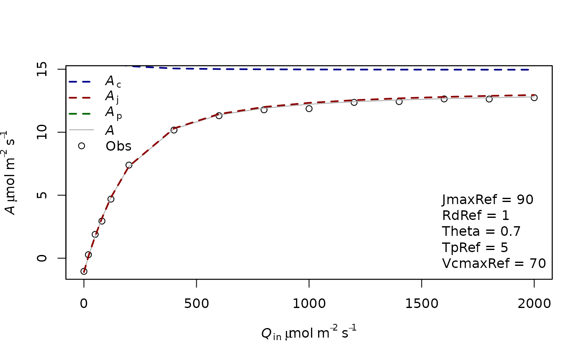

Aq_fitting.RmdThe objective of this tutorial is to illustrate how to fit an A-Q curve using the “LeafGasExchange” package. In this tutorial, we first simulate an A-Q curve with known photosynthetic parameters and noise. This curve is then fitted to retrieve the parameters.
For this example we first simulate a photosynthesis curve, but it would work the same if the data was not simulated but measured. The data simulation is done using the function f.A. This function needs a list of photosynthetic parameters which are produced using the function f.make.param() and a list of input variables (CO2 at the surface of the leaf, leaf temperature, incident light, RH). To have more information on the function f.make.param, you can use the command ?f.make.param in R console. Theta corresponds to the empirical curvature factor and abso corresponds to the leaf absorptance.
param=f.make.param(VcmaxRef = 70,JmaxRef=90,Theta=0.7,abso=0.9,TpRef=50/10,RdRef=1)
CO2=400
Tleaf=30+273.16
Tair=27+273.16
PAR=c(0,20,50,80,120,200,400,600,800,1000,1200,1400,1600,1800,2000)
RH=70
simul=f.A(PFD = PAR,cs = CO2,Tleaf = Tleaf,Tair = Tair,RH = RH,param = param)
# Here we include a normal error
simul$A=simul$A+rnorm(n=length(simul$A),mean = 0,sd = 0.2)
measures=data.frame(Tleaf=Tleaf,Ci=simul$ci,Qin=PAR,A=simul$A)We display this simulated curve using the function f.plot
f.plot(measures = measures,type = 'Aq',list_legend = param[c('VcmaxRef','JmaxRef','TpRef','RdRef','Theta')],param = param)
In this case, you see that the top Assimilation values are only limited by Aj. It is thought that at high light in usual environmental conditions, Ac and Aj have similar rates. This coordination is thought to be often present in plants. In other cases Ac can be limiting at high light.
For example:
param2=f.make.param(VcmaxRef = 55,JmaxRef=90,Theta=0.7,abso=0.9,TpRef=5,RdRef=1)
simul2=f.A(PFD = PAR,cs = CO2,Tleaf = Tleaf,Tair = Tair,RH = RH,param = param2)
# Here we include a normal error
simul2$A=simul2$A+rnorm(n=length(simul2$A),mean = 0,sd = 0.2)
measures2=data.frame(Tleaf=Tleaf,Ci=simul2$ci,Qin=PAR,A=simul2$A)
f.plot(measures = measures2,type = 'Aq',list_legend = param2[c('VcmaxRef','JmaxRef','TpRef','RdRef','Theta')],param = param2)To fit an AQ curve, it is necessary to detail the parameter that we want to estimate. All the parameters present in f.make.param can potentially be fitted even if it would not always make sense. We do a first fitting with only the parameters JmaxRef, Theta and RdRef. Those parameters have to be given in the list Start, with initial values. The method will look for different initial values around those values so it is not necessary to give very good ones, just not too stupid ones. The photosynthetic parameters have to be given in the list param. This is used to determine what should be the parameters for the temperature dependence, for the leaf absorbance, theta, etc. By default, the equations and parameters used in the TBM FATES to simulate the photosynthesis are used. In this example, we also give a high value for VcmaxRef so it is not limiting the photosynthesis rates. We’ll revisit this assumption later.
fitting1=f.fitting(measures = measures,Start = list(JmaxRef = 60, RdRef = 1,Theta=0.5),param=f.make.param(abso=0.9,VcmaxRef=9999),
modify.init=TRUE,do.plot=TRUE,type='Aq')## $par
## JmaxRef RdRef Theta
## 91.1058040 1.0993250 0.6656334
##
## $value
## [1] 0.356863
##
## $counts
## function gradient
## 120 NA
##
## $convergence
## [1] 0
##
## $message
## NULL
##
## [1] "sd 0.15424288223646"
## Length Class Mode
## 1 mle2 S4In a second example we now also (try to) fit VcmaxRef. Here the fitting gives a weird value for VcmaxRef which is very high as there is no information in the curve to estimate it.
fitting2=f.fitting(measures = measures,Start = list(JmaxRef = 30,VcmaxRef=40, RdRef = 1,Theta=0.5),param=f.make.param(abso=0.9),
modify.init=TRUE,do.plot=TRUE,type='Aq')## $par
## JmaxRef VcmaxRef RdRef Theta
## 91.1472544 223.2039836 1.0999653 0.6656598
##
## $value
## [1] 0.3569293
##
## $counts
## function gradient
## 501 NA
##
## $convergence
## [1] 1
##
## $message
## NULL
##
## [1] "sd 0.154257212993837"
## Length Class Mode
## 1 mle2 S4The fitting returns a list of 3 objects. The first object corresponds to the fitting using a minimum square function whereas the second object corresponds to a maximum likelihood derived using the mle2 package. This latter method is useful because it allows us to calculate the confidence interval of the parameters.
The third object correspond to the mean environmental values present in the input data file of the function (see the help of f.fitting for more info).
confint(fitting1[[2]])## 2.5 % 97.5 %
## sigma 0.1121193 0.2315494
## JmaxRef 89.5922893 92.6655218
## RdRef 0.9488200 1.2489213
## Theta 0.6028079 0.7204107It is possible to compare the AIC of the two models using the base function AIC or BIC. The lower AIC or BIC corresponds to the best model. It shows in this case that adding VcmaxRef is not usefull.
BIC(fitting1[[2]])## [1] -7.963471
BIC(fitting2[[2]])## [1] -6.574518We can redo this procedure for the second simulated curve:
fitting3=f.fitting(measures = measures2,Start = list(JmaxRef = 30, RdRef = 1,Theta=0.5),param=f.make.param(abso=0.9,VcmaxRef=150),
modify.init=TRUE,do.plot=TRUE,type='Aq')## $par
## JmaxRef RdRef Theta
## 80.2918206 0.9357455 0.8066975
##
## $value
## [1] 0.6441247
##
## $counts
## function gradient
## 132 NA
##
## $convergence
## [1] 0
##
## $message
## NULL
##
## [1] "sd 0.207223659568046"
## Length Class Mode
## 1 mle2 S4
fitting4=f.fitting(measures = measures2,Start = list(JmaxRef = 30, RdRef = 1,Theta=0.5,VcmaxRef=30),param=f.make.param(abso=0.9),
modify.init=TRUE,do.plot=TRUE,type='Aq')## $par
## JmaxRef RdRef Theta VcmaxRef
## 91.0102515 0.8282943 0.6501977 54.4861347
##
## $value
## [1] 0.2620363
##
## $counts
## function gradient
## 299 NA
##
## $convergence
## [1] 0
##
## $message
## NULL
##
## [1] "sd 0.132170675027424"
## Length Class Mode
## 1 mle2 S4As previously we can compare the fitting with or without VcmaxRef as a parameter to estimate:
BIC(fitting3[[2]])## [1] 0.8946358
BIC(fitting4[[2]])## [1] -11.21021In this case, the model with VcmaxRef is better.
Generally it is interesting to test the fitting with or without VcmaxRef, and sometimes with or without Theta. Note that Theta can be difficult to estimate and can also reach negative values (June, 2005).
Note also that the parameters from the light curves (VcmaxRef and JmaxRef notably) are rarely used in modeling and that the estimation of those parameters is generally done using A-Ci curves.
June, T. (2005). The light gradients inside soybean leaves and their effect on the curvature factor of the light response curves of photosynthesis. BIOTROPIA-The Southeast Asian Journal of Tropical Biology, (25).